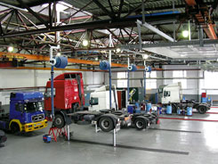
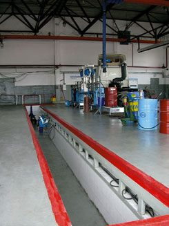
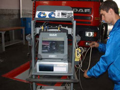
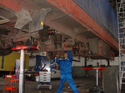
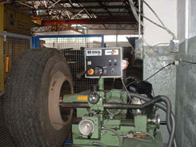

PREVENTIVE MAINTENANCE IN ROAD TRANSPORT
The role of preventive maintenance
Mechanical machines and installations need regular maintenance for adequate functioning. Trucks are no exception on this rule. On the contrary, because trucks are often used under heavy circumstances so that regular maintenance is of vital importance. Maintenance consists of preventive maintenance and repairs. Preventive maintenance is carried out in regular intervals, on the basis of the kilometres driven and/or a certain time period, taking into account the operational circumstances (loads, trip lengths, roads). The intervals have increased considerably in the last few decades thanks to improved technology of the trucks and better lubricants. A good level of preventive maintenance has a positive influence on the financial results of the transport company as well as on environment and on traffic safety.
- How to increase the level of preventive maintenance?
- What is influence of preventive maintenance on environment and traffic safety?
- What kind of goals does preventive maintenance gives to transport companies?
These and other subjects we want to clarify in this article.
The results of preventive maintenance depend very much on the quality of the diagnosis that has to be carried out at the end of each regular service interval. High quality, reliable diagnosis of trucks can be made only with the help of professional diagnostic equipment, such as Truck Centre Ltd has.
Environment 
Road transport has an important negative impact on environment, especially by emissions of polluting exhaust gas. In recent years the manufacturing industry made a huge effort to reduce the emissions by introducing vehicles that meet lower emission standards (Euro3). The transport operators can also contribute to the environment by applying an adequate level of preventive maintenance, which leads to lower use of energy and lower emissions.
Traffic safety
Road transport has a considerable influence on traffic safety. Because of the higher weight of the truck and the load the consequences of traffic accidents in which trucks are involved are more serious than those of other accidents. A good technical condition of the truck is of vital importance for the driver to prevent accidents. Preventive maintenance in combination with the annual legal roadworthiness testing plays a central role in keeping the technical condition of the truck at the required level.
safety. Because of the higher weight of the truck and the load the consequences of traffic accidents in which trucks are involved are more serious than those of other accidents. A good technical condition of the truck is of vital importance for the driver to prevent accidents. Preventive maintenance in combination with the annual legal roadworthiness testing plays a central role in keeping the technical condition of the truck at the required level.
Financial results of the transport company 
Regular preventive maintenance requires considerable costs of labour, parts and materials for the transport operator. On the other hand, preventive maintenance leads to savings on other cost categories and often also to higher revenues. The optimum level of preventive maintenance, leading to the lowest total service costs or the highest net balance of revenues and costs, is recommended by each manufacturer and described in the service manual of the truck. The recommendations are made based on deep analyses of the items related to (preventive) maintenance.
1. Costs of preventive maintenance
Preventive maintenance consists of diagnosis, changing of lubricants, cleaning and renewal of specific parts and systems of the truck. Modern trucks need preventive maintenance of two times a year. Costs of preventive maintenance are predictable and lay on a level of approximately 0,01Euro/km.
2. Costs and lost revenues because of repairs 
Repairs are made to correct certain unplanned malfunctions of parts, components or systems  of the truck. Reduction of preventive maintenance increases the costs of repairs. The aim of preventive maintenance - is to find out the future possible malfunctions of certain parts and repair or change them before they fault.
3. Costs and lost revenues because of repairs and breakdowns en route
Certain major repairs lead to a standstill of the truck en route. In this case a nearby workshop has to be contracted which may involve higher repair costs, especially in foreign countries with a higher price level or because the truck has to be towed to the workshop.  Also here the standstill causes loss of revenues, especially if the workshop does not have certain parts in stock. Besides, the operator may expect a claim from the client in case of late delivery or deterioration of the load. The adequate and regular preventive maintenance - is only tool to escape the brake down on a route.
Also here the standstill causes loss of revenues, especially if the workshop does not have certain parts in stock. Besides, the operator may expect a claim from the client in case of late delivery or deterioration of the load. The adequate and regular preventive maintenance - is only tool to escape the brake down on a route.
4. Costs related to economic lifetime
Preventive maintenance prolongs the economic lifetime of the truck.
5. Costs of fuel
Preventive maintenance decreases the fuel consumption. Other words, reduction of preventive maintenance leads to the worsening condition of the oil, the influence of dirt and worse functioning of certain parts.
6. Increase of reliability
Commercial success of Transport Company depends on reliability of the vehicle park operating. Reliability of the vehicles - 100% depends of preventive maintenance.
WE WISH YOU SUCCESS IN TRANSPORT OPERATION
"Truck Center Ltd"
-YOUR RELIABLE PARTNER-
READY FOR COOPERATION WITH YOU.